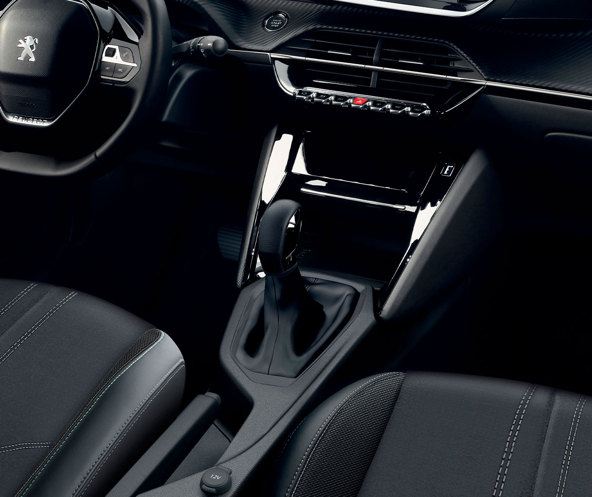
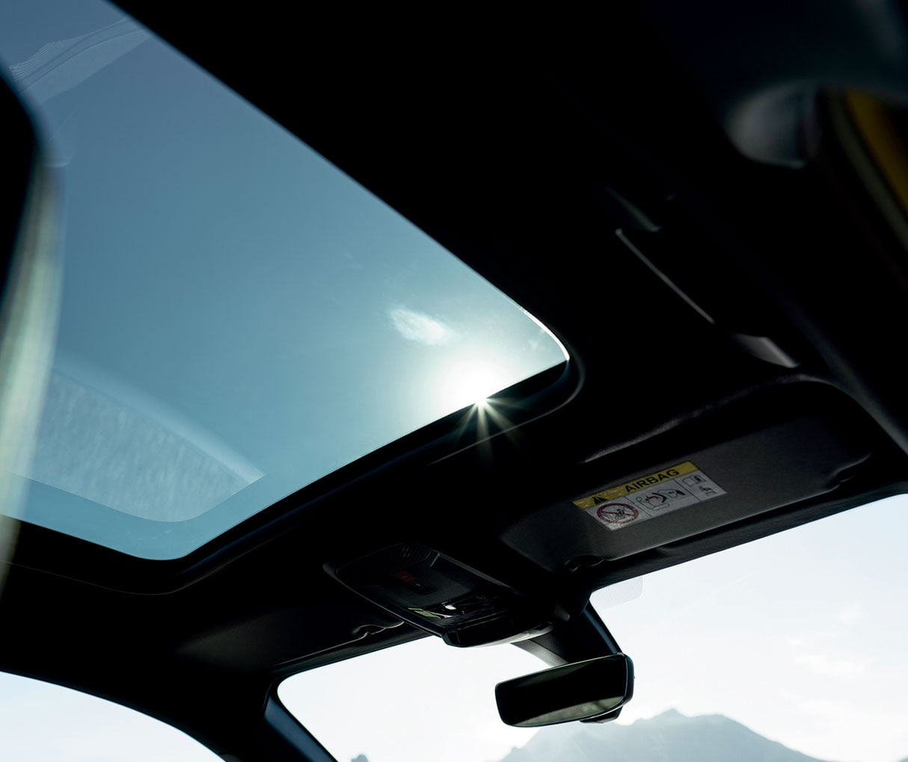
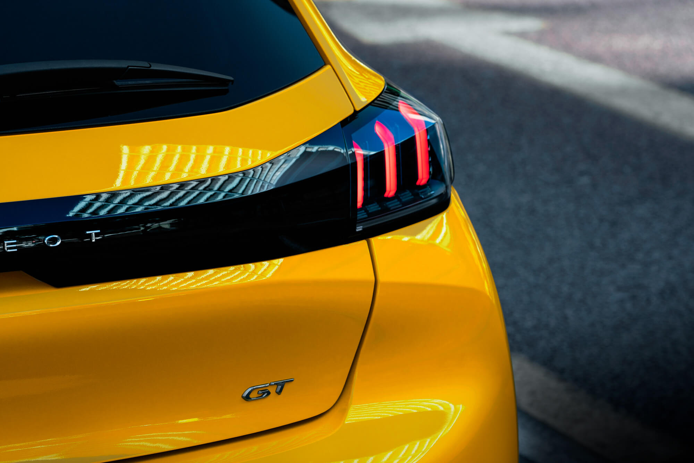
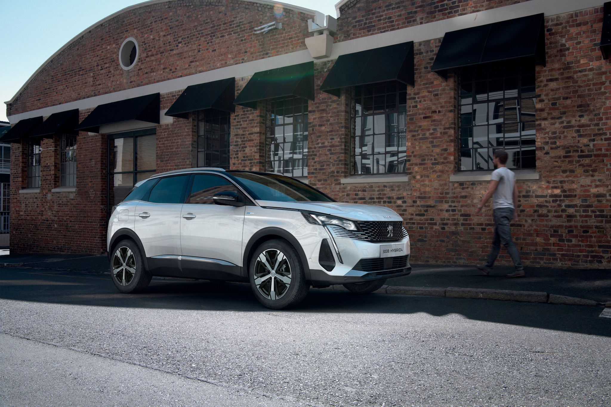
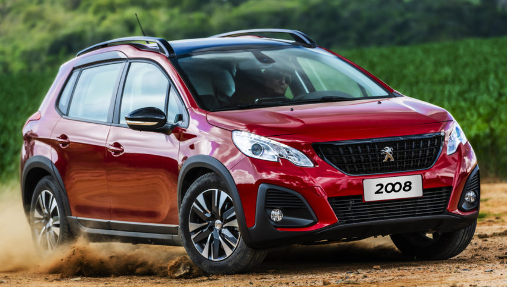
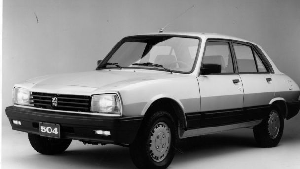

El diseño delantero del vehículo adopta la nueva firma lumínica asemejándose a los colmillos de un león mientras que el nombre del modelo nuevamente está colocado en el frente con un diseño gráfico nuevo y moderno. También el logo del león se colocó en posición vertical sobre la grilla frontal. La vista lateral resalta el aspecto dinámico del vehículo a través del trabajo realizado equilibrando luces y sombras que destacan al nuevo Peugeot 208 GT.
PANTALLA TÁCTIL 10¨ La pantalla de 10" se ubica ergonómicamente en el tablero de instrumentos permitiendo al conductor observar el estado del tránsito. Cuenta con duplicación de las aplicaciones del smartphone, compatibles con la conducción, en el sistema multimedia (wireless connectivity), así como también acceso a los parámetros de configuración del vehículo.
El nuevo SUV PEUGEOT 3008 cuenta con dos motorizaciones que permiten disfrutar al máximo este vehículo. El primero de ellos, un motor THP naftero de 165 CV entrega prestaciones dinámicas sobresalientes. El segundo de ellos, el motor diésel HDI de 150 CV con excelente torque invita a manejar grandes distancias con facilidad y bajo nivel de consumo de combustible.

Es uno de los elementos fundamentales que brindan el confort de marcha y suavidad de manejo. Una nueva calibración de la caja aporta una mayor progresividad en el pasaje de marchas evitando "golpes o tironeos" entre cambio y cambio para que el vehículo responda más rápidamente sin exigir tanto el motor.

El nuevo Peugeot 208 es el único en su segmento que cuenta con techo cielo panorámico. Además de ser un elemento de estilo increíble, brinda comodidad y bienestar a todos los ocupantes del auto.

La vista lateral resalta el aspecto dinámico del vehículo a través del trabajo realizado equilibrando luces y sombras que destacan al nuevo Peugeot 208 GT.

DISEÑO SOFISTICADO Su estilo distintivo y equilibrado es el balance perfecto para un vehículo que es amigable con el medioambiente.

El Peugeot i-Cockpit se luce en el interior del vehículo, permitiendo que todas las funciones estén fácilmente al alcance del conductor. El ADN del i-Cockpit se centra en tres aspectos: el volante compacto, el display digital de conductor, y la nueva pantalla multifunción de 10".

El nuevo SUV PEUGEOT 3008 cuenta con dos motorizaciones que permiten disfrutar al máximo este vehículo. El primero de ellos, un motor THP naftero de 165 CV entrega prestaciones dinámicas sobresalientes.

El nuevo auto familiar cuenta con numerosas ayudas a la conducción (ADAS) que asisten en todo momento al conductor para que su manejo sea mas seguro y tranquilo tanto para él como para los demás.